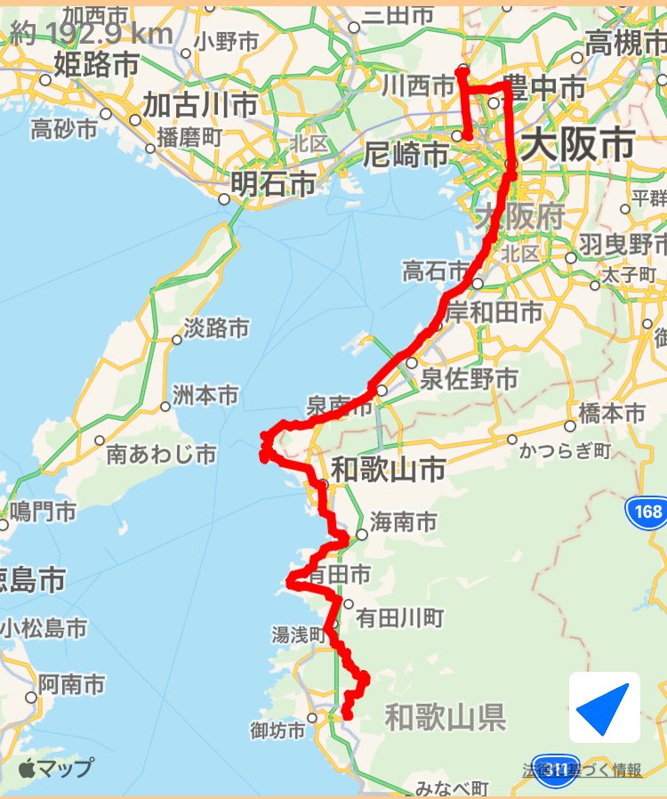

~123日目~
11/1 神戸市内
~124日目~
11/2 神戸市内
~125日目~
11/3 神戸⇨尼崎

~126日目~
11/4 尼崎⇨和歌山⇨御坊
~127日目~
11/5 御坊⇨潮岬⇨熊野
~128日目~
11/6 熊野⇨鳥羽⇨津
~129日目~
11/7 津⇨京都⇨神戸
~130日目~
11/8 神戸⇨京都
~131日目~
11/9 京都⇨四日市
~132日目~
11/10 四日市⇨名古屋⇨安城
~133日目~
11/11 安城⇨羽豆岬⇨セントレア⇨蒲郡
~134日目~
11/12 蒲郡⇨伊良湖岬⇨浜名湖⇨浜松
~135日目~
11/13 浜松⇨御前崎⇨富士宮
~136日目~
11/14 富士宮⇨河口湖⇨駿東
~137日目~
11/15 駿東⇨石廊崎⇨下田
~138日目~
11/16 下田⇨熱海⇨箱根
~139日目~
11/17 箱根⇨逗子⇨東京